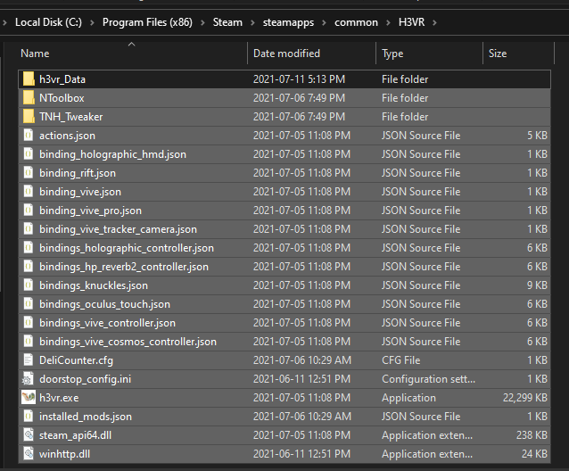
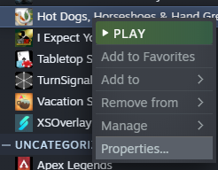
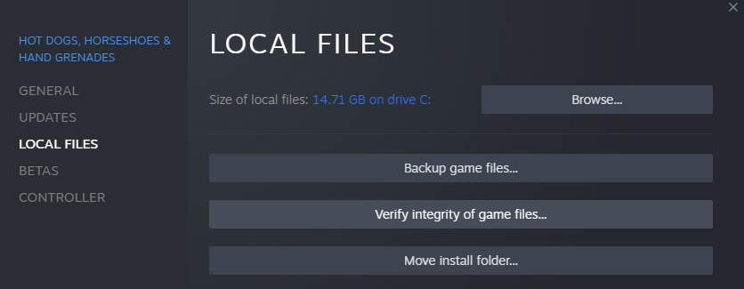

This process will remove any mod related items but leave the large parts of H3VR untouched, so you don't have to redownload gigabytes of data.
Delete all files in your main H3VR directory except for the h3vr_Data/ folder. Don't worry about vault files; they
are stored in another folder and will not be deleted.

Open Steam, and navigate to the game's properties by right-clicking on the game in the list.

Click on the Local Files menu on the left of the properties window, then press Verify integrity of game files.

Steam will now download the missing files it needs to run H3VR. A clean installation will be left after it does so.